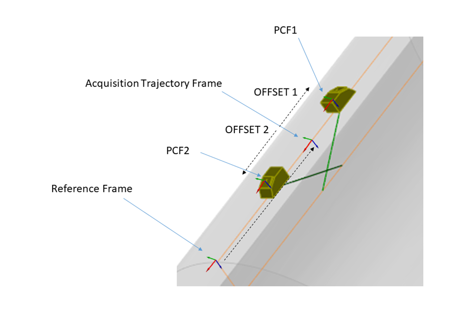

ONDE_ULTRASONIC_SETUP
classDiagram
ONDE_ULTRASONIC_SETUP o-- ONDE_PHASED_ARRAY_SETUP : PHASED_ARRAY_SETUP
ONDE_ULTRASONIC_SETUP o-- ONDE_UT_LAW : TRANSMIT_LAW
ONDE_ULTRASONIC_SETUP o-- ONDE_UT_LAW : RECEIVE_LAW
ONDE_SETUP_UT o-- ONDE_ULTRASONIC_SETUP : ULTRASONIC_SETUP
click ONDE_ULTRASONIC_SETUP href "../onde_ultrasonic_setup/index.html"
click ONDE_SETUP_UT href "../onde_setup/onde_setup_ut/index.html"
click ONDE_UT_LAW href "../onde_ut_law/index.html"
click ONDE_PHASED_ARRAY_SETUP href "../onde_phased_array_setup/index.html"
style ONDE_ULTRASONIC_SETUP stroke:#3f51b5,stroke-width:3pxUltrasonic setup
Acquisition gate
The acquisition gate is implicitly defined by:
- the value of Ascan_Astart
- the sampling frequency
- the dimension of data N_Time\<m>
t0 : ASCAN_ASTART
tend : ASCAN_ASTART + (N_Time\<m> - 1)/ASCAN_SAMPLE_RATE
Gain
GAIN indicates the total gain for each A-scan during reception. It is a multiplying factor that was applied at acquisition.
TCG curves. The curve is specified in the TCG_CURVE field. It is provided for the entire acquisition gate. The amplification must be cumulated to the global one defined by the GAIN attribute.
Laws
Each A-scan in a dataframe must be associated with both a transmit and a receive focal law through the RECEIVE_LAW and TRANSMIT_LAW datafields. These contain HDF5 references to the groups which provide the detailed description of each focal laws (the same structure is used for both transmit and receive focal laws). PRF indicates the pulse repetition frequency for each Tx/Rx combination
Dynamic laws
In order to allow advanced setups with different laws defined for each acquisition position, the cardinality of the transmission and reception can be either a 1D-array (same laws applied for each dataframe) or 2D (differentiated laws).
Filter Parameters
The filtering parameters take different values following the filter type.
- For FILTER_TYPE HIGH_PASS or LOW_PASS this is a single value giving the -3 dB cut-off frequency
- For FILTER_TYPE BAND_PASS this should contain two values for the lower and upper -3 dB cut-off frequencies
- For FILTER_TYPE OTHER, this should be an [3,N_DF\<m>] matrix where the first row is frequency and the second and third rows provide the real and imaginary parts of the filter's transfer function at that frequency.
Combination between offsets and trajectories
The offsets and directions provided in the dataset blocks can be combined to the data of the trajectory block in order to share common trajectories between different probes (as is common in TOFD controls for example). In this case, the trajectories links point to the same trajectory objects and the offsets/rotation between the trajectory and the probe PCF describe the relative positions of the different probes with respect to the trajectory frame. A typical example is illustrated in Figure 23, with a trajectory frame given at the Probe Center Separation and offsets used to define the PCF locations. If the offset is not provided, the PCF and trajectory frame are assumed to be the same.

Figure 23: Example of offset and trajectory combination in the case of a TOFD inspection
Variable gates
Variable gates are not handled in this version -- it can be emulated by zero---padding the data block
Fields
ASCAN_SAMPLE_RATE — This indicates the sampling frequency of A-scan data points.
H5T_FLOAT
ASCAN_SAMPLE_RATE — This indicates the sampling frequency of A-scan data points.This indicates the sampling frequency of A-scan data points. It is assumed that a uniform sampling rate is used throughout A-scan data collection.
Type: H5T_FLOAT | Dimensions: 1 | Required: Yes | Storage: attribute
ASCAN_START — This indicates the starting time for data acquisition.
H5T_FLOAT
ASCAN_START — This indicates the starting time for data acquisition.This indicates the starting time for data acquisition. If dimension is 1, the same start time is used for all A-Scans, else a different start time is specified for each A-Scan.
Type: H5T_FLOAT | Dimensions: 1 or [N_Ascan<m>] or [ N_Ascan<m>,N_DF<m>] | Required: Yes | Storage: dataset
FILTER_DESCRIPTION — Description of the filtering applied
H5T_STRING
FILTER_DESCRIPTION — Description of the filtering appliedDescription of the filtering applied
Type: H5T_STRING | Dimensions: 1 | Required: No | Storage: attribute
FILTER_PARAMETERS — Optional datafield providing analogue filter parameters - see notes for detailed explanation
H5T_FLOAT
FILTER_PARAMETERS — Optional datafield providing analogue filter parameters - see notes for detailed explanationOptional datafield providing analogue filter parameters - see notes for detailed explanation
Type: H5T_FLOAT | Dimensions: 1 or [N_Ascan<m>] or [ N_DF<m>,N_Ascan<m>] | Required: No | Storage: attribute
FILTER_TYPE — Defines the type of filtering applied to the signals : NO_FILTER, LOW_PASS, HIGH_PASS, BAND_PASS, OTHER
H5T_STRING
FILTER_TYPE — Defines the type of filtering applied to the signals : NO_FILTER, LOW_PASS, HIGH_PASS, BAND_PASS, OTHERDefines the type of filtering applied to the signals : NO_FILTER, LOW_PASS, HIGH_PASS, BAND_PASS, OTHER
Type: H5T_STRING | Dimensions: - | Required: No | Storage: attribute | Allowed: "NO_FILTER","LOW_PASS","HIGH_PASS","BAND_PASS","OTHER"
GAIN — This indicates the total gain for each A-scan during reception.
H5T_FLOAT
GAIN — This indicates the total gain for each A-scan during reception.This indicates the total gain for each A-scan during reception. Multiplying factor that was applied at acquisition.
Type: H5T_FLOAT | Dimensions: [ N_Ascan<m> ] | Required: Yes | Storage: dataset
LABEL —
H5T_STRING
LABEL — No detailed description provided.
Type: H5T_STRING | Dimensions: 1 | Required: No | Storage: attribute
PHASED_ARRAY_SETUP —
H5T_STD_REF_OBJ<ONDE_PHASED_ARRAY_SETUP>
PHASED_ARRAY_SETUP — No detailed description provided.
Type: H5T_STD_REF_OBJ<ONDE_PHASED_ARRAY_SETUP> | Dimensions: 1 | Required: No | Storage: attribute
PRF — Pulse Repetition Frequency
H5T_FLOAT
PRF — Pulse Repetition FrequencyPulse Repetition Frequency
Type: H5T_FLOAT | Dimensions: [N_Ascan<m>] or [2] | Required: No | Storage: dataset
RECEIVE_LAW — Each A-scan in a dataframe must be associated with both a transmit and a receive focal law through the datafields.
H5T_STD_REF_OBJ<ONDE_UT_LAW>
RECEIVE_LAW — Each A-scan in a dataframe must be associated with both a transmit and a receive focal law through the datafields.Each A-scan in a dataframe must be associated with both a transmit and a receive focal law through the datafields. These contain HDF5 references to the groups which provide the detailed description of each focal laws (the same structure is used for both transmit and receive focal laws).Mandatory for phased array setups.
Type: H5T_STD_REF_OBJ<ONDE_UT_LAW> | Dimensions: [N_Ascan<m>] or [N_DF<m>,N_Ascan<m>] | Required: No | Storage: dataset
RECTIFICATION — Defines if the data are FULL_WAVE or RECTIFIED_POSITIVE, RECTIFIED_NEGATIVE, RECTIFIED_FULL
H5T_STRING
RECTIFICATION — Defines if the data are FULL_WAVE or RECTIFIED_POSITIVE, RECTIFIED_NEGATIVE, RECTIFIED_FULLDefines if the data are FULL_WAVE or RECTIFIED_POSITIVE, RECTIFIED_NEGATIVE, RECTIFIED_FULL
Type: H5T_STRING | Dimensions: - | Required: Yes | Storage: attribute | Allowed: "FULL_WAVE","RECTIFIED_POSITIVE","RECTIFIED_NEGATIVE","RECTIFIED_FULL"
SIGNAL — Digitization of the emission signal (can be used to store arbitrary signals).
H5T_FLOAT
SIGNAL — Digitization of the emission signal (can be used to store arbitrary signals).Digitization of the emission signal (can be used to store arbitrary signals). If missing impulse emission at time 0.0 is assumed. 2D Array with one row for time and one for amplitude.
Type: H5T_FLOAT | Dimensions: [N_TSig<m>,2] | Required: No | Storage: dataset
TCG_CURVE — TCG curve applied to the received signals.
H5T_FLOAT
TCG_CURVE — TCG curve applied to the received signals.TCG curve applied to the received signals. The amplitude correction is given for each time sample as a multiplying factor.
Type: H5T_FLOAT | Dimensions: [N_Ascan<m>,N_TCG<m> ] | Required: No | Storage: dataset
TRANSMIT_LAW — Each A-scan in a dataframe must be associated with both a transmit and a receive focal law through the datafields.
H5T_STD_REF_OBJ<ONDE_UT_LAW>
TRANSMIT_LAW — Each A-scan in a dataframe must be associated with both a transmit and a receive focal law through the datafields.Each A-scan in a dataframe must be associated with both a transmit and a receive focal law through the datafields. These contain HDF5 references to the groups which provide the detailed description of each focal laws (the same structure is used for both transmit and receive focal laws). Mandatory for phased array setups.
Type: H5T_STD_REF_OBJ<ONDE_UT_LAW> | Dimensions: [N_Ascan<m>] or [N_DF<m>,N_Ascan<m>] | Required: Yes | Storage: dataset
TYPE —
H5T_STRING
TYPE — No detailed description provided.
Type: H5T_STRING | Dimensions: 1 | Required: Yes | Storage: attribute | Allowed: ["ONDE_ULTRASONIC_SETUP"]